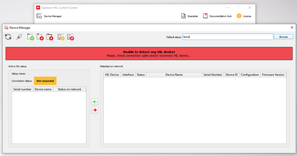

Connecting to your HIL device
Guidelines on how to connect to a HIL device using either USB or Ethernet ports.
Connecting your HIL device
Communication with the HIL device can be established either via USB or Ethernet. During the boot process, the HIL device checks if a USB device is connected and tries to establish communication. If no USB connection is established, the HIL unit will switch to Ethernet connection mode. If USB communication is established after the boot process without an active connection during boot time, USB communication won't function until the HIL device is rebooted.
In the same manner, Typhoon HIL Control Center first detects if there are any HIL devices available over USB. If not, it scans for available devices on the network.
USB and Ethernet communications cannot be used simultaneously.
Setting up a USB Connection
To make a USB connection, connect your HIL device to your testbed setup by using the USB cable you received in your Typhoon HIL package, and turn your HIL on. It is recommended to use a USB 3.0 port if available. USB drivers are automatically installed with Typhoon HIL Control Center software.
Once your drivers are successfully installed, start Typhoon HIL Control Center and check if your HIL device is detected by opening the Device Manager tool in the top left corner of the application. If detection is successful, you should be able to see your HIL device in the "Detected on network" section. If you instead get the message shown below, you must install the drivers manually. The procedure for manual driver installation is available in the Manual HIL USB Driver Reinstallation section of the USB connection to HIL Lost / Unable to detect HIL FAQ Guide.

Setting up an Ethernet Connection
As a first step, check your Network and Firewall Settings. Table 1 shows which ports are used for Ethernet communication with Typhoon HIL Control Center. These may not be used by communication protocols that use TCP/IP or UDP. Please make sure these ports are open in your Firewall Software.
| Port number | Type |
|---|---|
| 40100 | TCP |
| 40101 | TCP |
| 40102 | TCP |
| 40103 | TCP |
| 40110 | TCP |
| 40200 | UDP |
| 40201 | TCP |
Once your settings are confirmed, an Ethernet connection with the HIL can be configured. If your HIL has more than one Ethernet port, connect to Ethernet port number 1. You can then initiate a connection in one of three ways:
- Dynamically assigned IP address (DHCP)
By default, HIL devices are configured to try to acquire an IP address from the DHCP server (e.g. router). If DHCP communication fails, the HIL gets an address from the APIPA IP address range (169.254.0.1 to 169.254.255.254). It is recommended to have the Ethernet cable already plugged in during boot time.
- Static IP address
Static IP addresses can be configured in the HIL.ini file, which can be accessed through the Device Manager in Typhoon HIL Control Center via the ip_address_eth_port_1. Open Device Manager, select the desired HIL device, and click Actions -> Change Device INI File. After updating the settings and rebooting the HIL, the static IP address will be configured.
- Direct one to one connection
The HIL device can establish a direct connection to the PC without additional network devices. If there is no DHCP present, both the PC and the HIL will get an IP address from the APIPA range, meaning there is no configuration required. If there is a static IP address set on the HIL, the connection can be established by configuring the static IP address on the PC to be in the same subnet as the HIL device. For example, if the IP address of the HIL device is set to 192.168.10.200, to establish a connection you should configure the PC IP address to 192.168.10.X, where X can be in range 1-254, and X is different than the HIL IP address (in this case, 200).